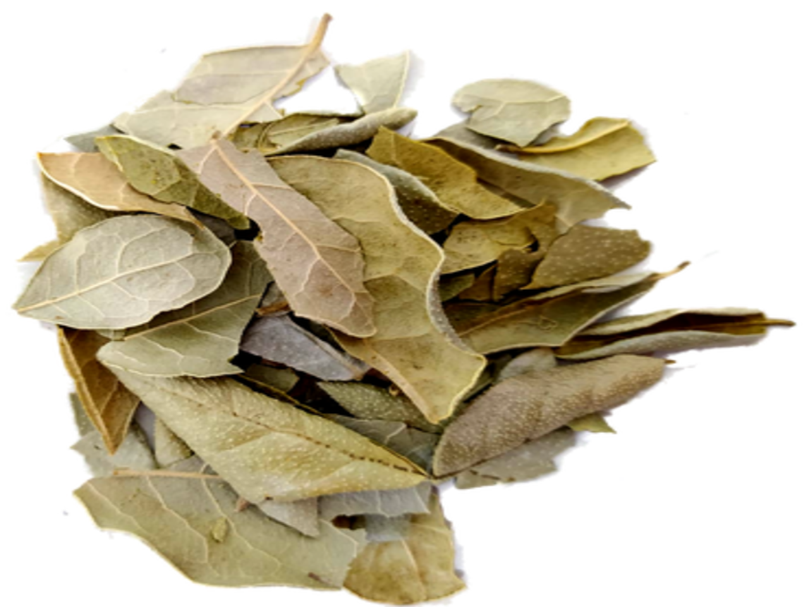
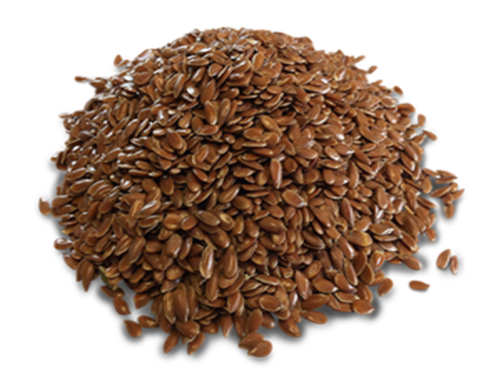
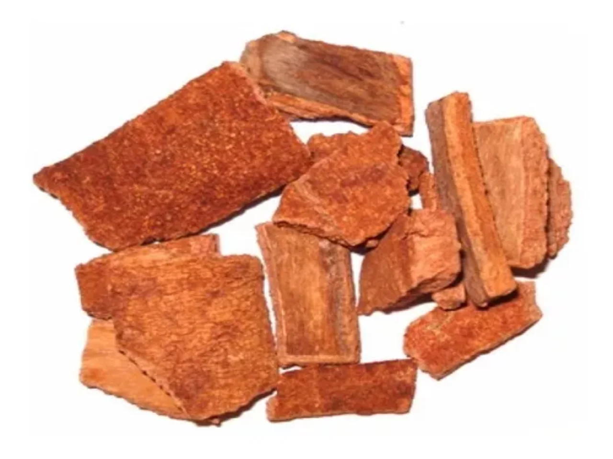
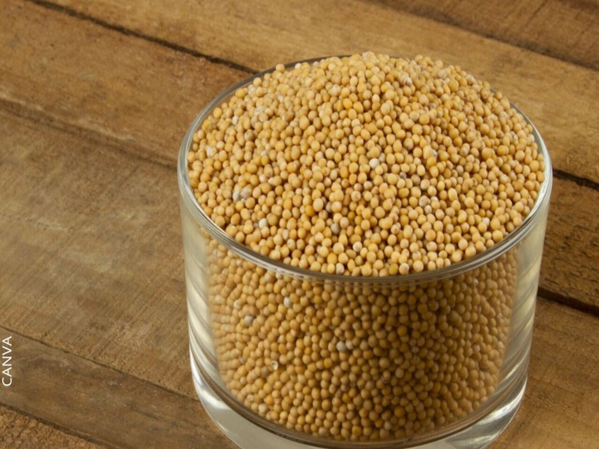
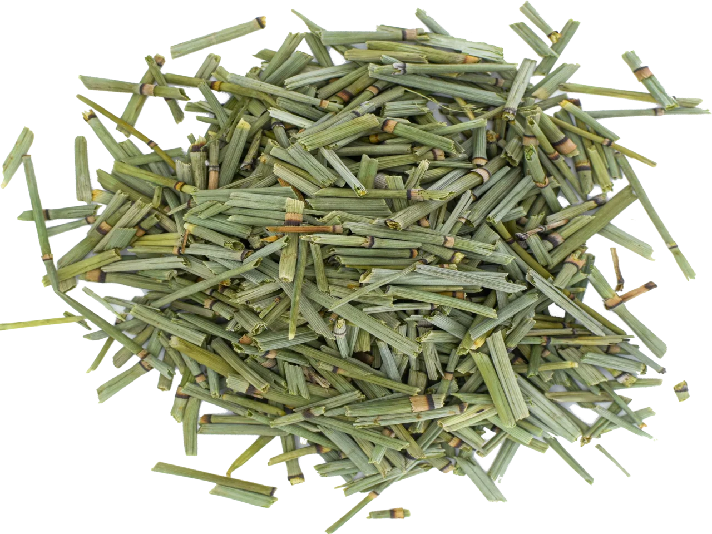

Detalle: Se le atribuyen propiedades medicinales, como antioxidantes y beneficios potenciales para la presión arterial y el colesterol.
Precio: Venta al por mayor y menor

Boldo
Detalle: El boldo es una planta sudamericana utilizada en infusiones por sus posibles beneficios digestivos y propiedades hepatoprotectoras.
Precio: Venta al por mayor y menor
Uña de Gato
Detalle: La uña de gato es una planta medicinal amazónica conocida por sus propiedades inmunomoduladoras y antiinflamatorias.
Precio: Venta al por mayor y menor

Linaza
Detalle: La linaza es una semilla rica en fibra, ácidos grasos omega-3. También se usa como suplemento dietético para mejorar la digestión.
Precio: Venta al por mayor y menor

Chuchuguaza
Detalle: La infusión tiene propiedades antiinflamatorias excelentes que alivian dolores de las articulaciones por la artritis y los dolores de espalda de casi todo tipo .
Precio: Venta al por mayor y menor

Grano de Mostaza
Detalle: Se ha utilizado tradicionalmente para aliviar dolores musculares y articulares, como expectorante para problemas respiratorios y como estimulante circulatorio .
Precio: Venta al por mayor y menor

Cola de caballo
Detalle: Se ha utilizado tradicionalmente para aliviar dolores musculares y articulares, como expectorante para problemas respiratorios y como estimulante circulatorio .